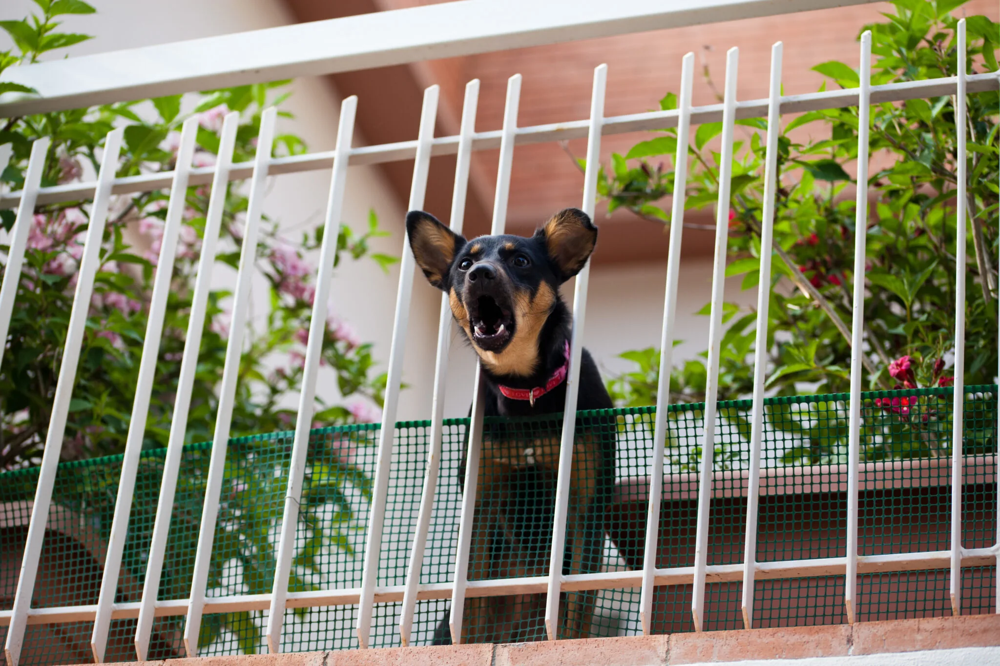

Dog Owners Are Using This Small Device To Help Stop Excessive Barking Without Yelling Or Shock Collars
A Simple Ultrasonic Device That Dog Owners Say Helped Restore Peace At Home
After hearing so many people talk about NoBark Ultra, we decided to take a closer look at why this small handheld device is suddenly everywhere online.
NoBark Ultra has become a popular pick among dog owners looking for a humane training aid
If you love your dog but feel exhausted by the nonstop barking, you're definitely not alone.
For many dog owners, barking starts as a small issue... then slowly becomes something that takes over the entire house.
The doorbell rings. The dog explodes.
A neighbor walks by the window. More barking.
A package gets delivered. Barking again.

For many owners, barking at doors, windows, and outside noise becomes a daily stress point
And after a while, it doesn't just become annoying — it becomes stressful.
You worry about your neighbors. You feel embarrassed when guests come over. You start dreading every little noise that might set your dog off again.
Most people try the usual things first: treats, yelling, clapping, spray bottles, training videos, or expensive collars that they don't even feel comfortable using.
But for many owners, those options are either inconsistent, too harsh, or simply don't fit into daily life.
That's exactly why so many people are now turning to a device called NoBark Ultra.
Why Dog Owners Are Suddenly Talking About Ultrasonic Training

NoBark Ultra is a small handheld device designed to interrupt unwanted barking
NoBark Ultra is a handheld training device designed to interrupt unwanted behavior using ultrasonic sound.
The idea is simple: when your dog starts barking or displaying another unwanted behavior, you press the button and the device emits a high-frequency sound intended to get the dog's attention and break that behavior pattern.
Unlike traditional bark collars, the appeal here is obvious: no shock, no physical correction, and no need to scream across the room.
That is one of the biggest reasons dog owners are paying attention to it. Many people want help correcting behavior, but they do not want a harsh method.
What makes this especially attractive is how portable and easy it is to use. It is small enough to keep by the front door, carry on a walk, or use in the backyard.
For owners who feel like barking has taken over their home, the promise is simple: a faster, calmer interruption that fits into real life.
Many owners prefer compact training tools they can use at home, on walks, or during visits
What Makes NoBark Ultra Different From Typical Bark Solutions?
Most bark-related products fall into one of three categories:
1) methods that are inconsistent, like yelling or verbal correction
2) methods that take a lot of time and repetition before owners see any change
3) harsher solutions that many people simply do not want to use
NoBark Ultra sits in a different category. It is marketed as a more humane, low-effort option that helps interrupt unwanted barking in the moment, before the behavior escalates.
That matters because timing is everything in dog training. The quicker you can redirect a dog at the moment the behavior starts, the better your chances of creating a better routine over time.
In other words, NoBark Ultra is not about punishing your dog — it is about interrupting the cycle so you can guide them more calmly.
- Keep it nearby in places where barking usually starts
- Press the button as soon as unwanted barking begins
- Follow up by redirecting your dog calmly
- Repeat consistently during trigger moments like the door, windows, walks, or visitors
Why This Device Is Catching On So Fast
After reviewing the product angle, it became pretty obvious why people are sharing it.
Why owners are interested in NoBark Ultra:
- Designed to help interrupt excessive barking quickly
- Appeals to owners who want a no-shock option
- Portable enough for both indoor and outdoor use
- Simple one-button format
- Can be used during common trigger moments like guests, delivery knocks, walks, and fence barking
- Feels more practical than complicated training routines for busy households
That combination is powerful: easy to understand, easy to carry, and easy to use in the exact moments where most barking problems happen.
And for frustrated owners, simplicity matters. Most people are not looking for a complicated system. They just want a calmer home and a dog that is easier to manage.
Our First Impression After Looking Into It
Excessive barking is one of the most common complaints dog owners have, especially in apartments, shared neighborhoods, or homes with frequent visitors.
You do not need to explain a complicated system. A small device, one button, fast interruption, and a more humane approach — that is immediately clear to the average buyer.
If someone is already frustrated by barking, they do not want to read a 45-minute dog training manual. They want something that feels practical right now.
Many dog owners do not want to use shock-based correction. This product directly appeals to that emotional concern.
What makes NoBark Ultra compelling is not that it promises some magic overnight transformation — it is that it offers dog owners a simple, humane-feeling tool for one of the most frustrating household problems there is.
Who This Might Be Best For
NoBark Ultra may be worth a closer look if your dog tends to bark at:
• knocks at the door
• guests entering the house
• other dogs outside
• cars, delivery drivers, or neighborhood sounds
• random movement near windows or fences
It may also appeal to owners who have already tried the usual tricks and want a tool that feels more structured than shouting but less aggressive than a shock collar.
Many barking issues happen in short, repeated daily moments — which is exactly where simple tools often work best
If Excessive Barking Is Driving You Crazy, This Is Worth Checking Out
No dog owner wants their home to feel tense, noisy, or stressful all day.
And while no training aid replaces consistency, tools that make correction easier in the moment can make a very real difference.
That is why so many people are looking at NoBark Ultra right now.
It is small, simple, and built around a problem millions of owners deal with every single day.
If your dog barks nonstop and you have been searching for something practical, humane, and easy to use, this might be one of the better options to look at today.
SEE ALSO: Check availability for NoBark Ultra here » CHECK NOBARK ULTRA AVAILABILITY >>
Comments
My dog loses his mind every time Amazon shows up. I have been looking for something that doesn't involve a shock collar, so this definitely got my attention.
Fence barking has been our biggest problem. If this helps interrupt that behavior without yelling across the yard, I'm in.
I like that it sounds more humane than the usual bark collar products. My dog is sweet, just way too reactive at the door.
The biggest sell for me is that it's handheld and simple. Most training products seem overcomplicated or too harsh.